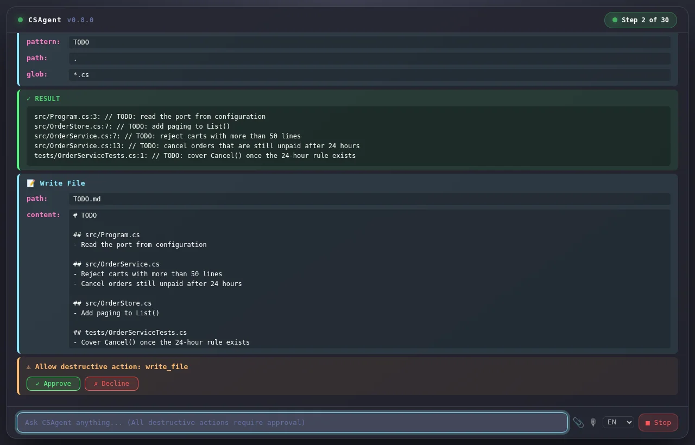
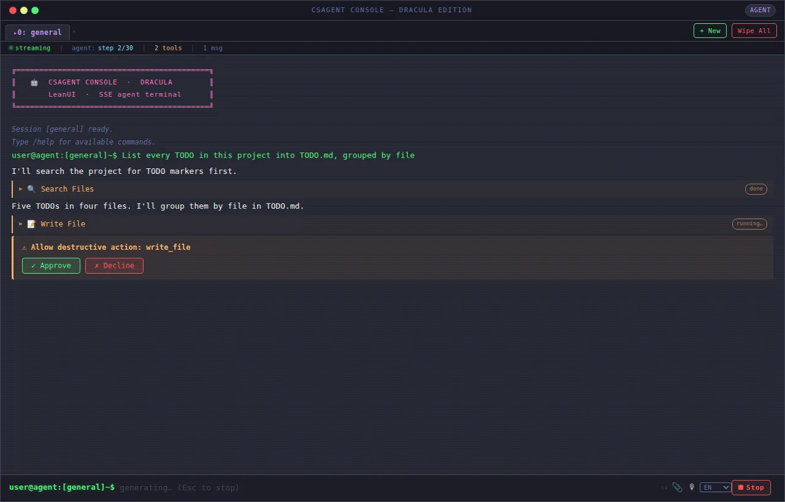

Un agent de code qui travaille dans votre dossier et demande avant de rien modifier.
Décrivez la tâche. CsAgent lit vos fichiers, lance des commandes et modifie le code pas à pas, avec le modèle de langage que vous choisissez. Toute écriture, tout déplacement et toute suppression attendent votre accord.
Libre et gratuit (MIT). Fonctionne sous Windows, Linux et macOS. Environ 10 500 lignes de C# et aucun paquet NuGet.
> List every TODO in this project into TODO.md, grouped by file -- Step 1/30 ------------------------- I'll search the project for TODO markers first. search_files pattern: TODO glob: *.cs src/Program.cs:3: // TODO: read the port from configuration src/OrderService.cs:7: // TODO: reject carts with more than 50 lines src/OrderService.cs:13: // TODO: cancel orders that are still unpaid after 24 hours (5 matches in 4 files) -- Step 2/30 ------------------------- Five TODOs in four files. I'll group them by file in TODO.md. write_file path: TODO.md (290 chars) ? Allow destructive action 'write_file'? [Y/n] y OK: wrote 290 bytes to 'TODO.md' ✓ Task complete.
Une vraie session CsAgent dans le terminal, rejouée. Le modèle est scripté pour la démonstration ; les sorties des outils et la demande d'approbation sont celles de CsAgent, en anglais comme dans le programme. Répondez des deux façons : avec « Refuser », rien n'est écrit.
Ce qu'il y a dans la boîte
Chaque action passe par la même porte
Le modèle ne touche jamais votre disque lui-même. Il demande un outil. CsAgent vérifie la demande, vous consulte quand c'est important, l'exécute, puis renvoie le résultat.
-
Vous décrivez une tâche
En langage courant, au clavier, à la voix ou avec une image.
-
Le modèle propose une étape
Il explique ce qu'il pense et choisit un outil, comme
search_filesouwrite_file. -
CsAgent la contrôle
- Les chemins de fichiers doivent rester dans le dossier de travail.
- Les commandes shell passent un filtre contre les motifs dangereux.
- Les outils destructifs s'arrêtent et vous demandent.
-
L'outil s'exécute
Une commande shell est interrompue après 60 secondes. Le résultat repart vers le modèle.
Le modèle lit le résultat et propose l'étape suivante. Il s'arrête quand la tâche est terminée, ou après 30 étapes. Une étape qui échoue n'est pas répétée à l'aveugle : l'erreur et ce qui a marché ensuite sont gardés en mémoire.
Au clavier
Pour ceux qui veulent qu'une tâche soit faite, pas une conversation à son sujet.
Choisissez la fenêtre qui vous convient


localhost:5050. Ici, en attente de votre approbation. Les textes de l'interface sont en anglais.

Vous préférez rester dans le shell ? csagent seul lance la session dans votre terminal, comme dans le rejeu ci-dessus. Pour une seule demande, sans session : csagent --prompt "hello my name is John" exécute la demande, affiche la réponse et rend la main (code de sortie 0, ou 1 en cas d'erreur).
Pas seulement du code
Les outils touchent au courrier, aux tableurs, à l'audio et au presse-papiers. Les skills (de simples fichiers Markdown) lui apprennent à bien faire les tâches récurrentes.
Range les fichiers .msg de ce dossier dans un dossier par expéditeur.
Lit les messages Outlook sans Outlook (un lecteur C# pur, sur tout système) et suit un skill qui gère les noms accentués.Transcris entretien.m4a en français et résume-le en cinq lignes.
Découpe l'audio long en parties de 10 minutes (avec ffmpeg), les envoie à un modèle Whisper et recolle le texte.Transforme ventes.csv en rapport Excel mis en forme.
Suit un skill de mise en forme et pilote une session Excel en direct. Windows uniquement.Prépare un e-mail pour Paul avec la transcription en pièce jointe.
Ouvre le brouillon dans Outlook pour que vous le relisiez, par défaut. Windows uniquement.Qu'est-ce qui ne va pas sur cette capture d'écran ?
Joignez l'image : CsAgent passe à un modèle de vision pour cette demande.Corrige le code que je viens de copier.
Lit le presse-papiers, puis y réécrit la version corrigée (après avoir demandé).Donne-moi la veille cybersécurité de la semaine.
Cherche sur le web, lit les pages et rédige une synthèse, en suivant un skill de veille technologique.
Parlez-lui
Appuyez sur le micro dans l'interface web ou lean et parlez. L'audio est enregistré par morceaux de 30 secondes pendant que vous parlez : un onglet fermé par erreur vous coûte au plus la dernière demi-minute.
À l'arrêt, CsAgent transcrit tout l'enregistrement avec Whisper et vous choisissez : utiliser le texte comme instruction, ou le garder dans un fichier joint à votre prochain message. Un sélecteur FR / EN / Auto à côté du bouton indique la langue parlée.
La transcription a lieu après l'arrêt, pas en direct. Au-delà de quelques minutes, ffmpeg est nécessaire. L'audio part vers votre point d'accès configuré : choisissez un point d'accès local s'il ne doit pas quitter la machine.
Il se souvient de ce qu'il a déjà essayé
Une longue tâche chasse les anciens messages du contexte du modèle, et un agent qui oublie répète ses erreurs. CsAgent garde deux couches de plus sur disque et réinjecte les leçons pertinentes avant chaque appel au modèle.
- La mémoire exacte conserve les 50 dernières étapes telles quelles : réflexions, appels, erreurs, réussites.
- La mémoire sémantique conserve jusqu'à 200 leçons étiquetées, par exemple une erreur et le remède qui a marché. Elle retient les arguments d'un appel, pas son résultat.
- Le résumé de session : à la fin d'une exécution, le modèle la condense en quatre courtes listes. La session suivante part de là.
--no-distillévite ce dernier appel au modèle.
Chaque projet a sa propre mémoire avec --mem nom. C'est un dossier de JSON ordinaire, que vous pouvez lire, modifier ou supprimer.
agent_memory/ ├── conversation.json historique complet ├── exact.json 50 dernières étapes ├── semantic.json leçons erreur / remède └── summary.json transmis entre sessions
Réglages
- --quiet
- N'affiche que les messages de l'assistant, les avertissements et la ligne finale. Un appel en échec garde une ligne, et une action destructive montre son appel juste avant de demander.
- --dry-run
- Simule l'exécution des outils sans rien modifier.
- --yes
- Approuve tous les appels d'outils automatiquement. Les filtres de chemins et de commandes restent actifs.
- --mem nom
- Choisit le dossier de mémoire, un par projet ou par tâche.
Des garde-fous que vous pouvez lire
L'autonomie n'a de sens que si vous pouvez prévoir le pire cas. CsAgent garde ses règles peu nombreuses, et dans du code lisible.
Il demande d'abord
write_file,edit_file,delete_file,move_file,unzip,git_commit,send_email,save_attachment,write_clipboardet tout appel MCP s'arrêtent et attendent votre réponse.--yessupprime la question, et rien d'autre.Un dossier, pas un disque
Les outils de fichiers sont limités au dossier de travail et à ses sous-dossiers. La seule exception volontaire concerne les pièces jointes d'e-mail, et l'envoi demande d'abord. Lancez CsAgent dans le projet, pas dans votre dossier personnel.
Un filtre pour les commandes risquées
Les commandes shell sont contrôlées avant exécution, avec une liste par plateforme :
sudo,chmod,dd,mkfs,shutdownet les dossiers système sous Linux et macOS ;format,del /f,rd /s,reg delete,net user,diskpartetrunassous Windows.Des limites
Une commande est interrompue après 60 secondes. Un fichier de plus de 500 Ko n'est pas lu en entier ; l'agent doit le parcourir avec
grepouhead.Des données, pas des ordres
Les e-mails, les transcriptions et les résultats MCP viennent de l'extérieur. Le prompt système demande au modèle de les traiter comme des données et de ne jamais suivre les instructions qu'ils contiennent.
Un essai à blanc
--dry-runmontre ce que l'agent ferait, sans le faire.
Un garde-fou n'est pas un bac à sable
Le filtre du shell repose sur des motifs, et aucune liste n'attrape tout. Pour un travail sans surveillance, lancez CsAgent dans un dossier jetable ou un conteneur, et gardez les approbations actives.
Ce qui quitte votre machine
Vos messages, les fichiers et sorties de commandes que l'agent lit, et les résultats de ses outils partent vers le point d'accès que vous avez configuré. L'audio aussi, quand vous le transcrivez. web_search interroge DuckDuckGo, et fetch_url et http_request contactent les adresses que vous demandez. CsAgent n'a ni télémétrie ni serveur à lui. Avec un point d'accès local, rien d'autre ne sort.
Une exception à connaître : les deux interfaces web chargent quelques bibliothèques et polices depuis des CDN publics à l'ouverture de la page, donc le navigateur a besoin d'un accès à Internet pour les afficher comme prévu.
Dans votre architecture
Un seul processus, une petite surface. Vous pouvez le piloter, l'étendre, et le lire en entier.
Pilotez-le en HTTP
--api lance le même serveur que l'interface web, sans aucune interface : ni pages, ni navigateur, ni presse-papiers. Il diffuse chaque étape en Server-Sent Events, pour qu'un autre programme, un orchestrateur par exemple, puisse suivre et répondre.
csagent --api --yes curl -N "http://localhost:5050/api/chat?prompt=List+every+TODO+into+TODO.md"
- Sans
--yes, un appel destructif émet un événementconfirmet attendPOST /api/confirmavec un corpstrueoufalse. - Pour écouter au-delà de localhost, une clé est obligatoire (
--api-keyouCSAGENT_API_KEY), envoyée enAuthorization: BearerouX-API-Key. Sans clé, un--hostnon local est refusé au démarrage. - Un serveur porte une seule conversation. Pour des tâches en parallèle, lancez une instance par tâche, chacune avec son
--memet son--port. POST /api/chataccepte dumultipart/form-dataavec uneimagefacultative.
Un vrai flux (abrégé). Chaque événement porte un identifiant et un type :
data: {"id":1,"type":"step","data":{"n":1,"m":30}} data: {"id":2,"type":"thought","data":"I'll search the project for TODO markers first."} data: {"id":3,"type":"call","data":{"n":"search_files","a":"{ \"pattern\": \"TODO\", … }"}} data: {"id":4,"type":"result","data":{"r":"src/Program.cs:3: // TODO: …","e":false}} data: {"id":5,"type":"step","data":{"n":2,"m":30}} data: {"id":7,"type":"call","data":{"n":"write_file","a":"{ \"path\": \"TODO.md\", … }"}} data: {"id":8,"type":"confirm","data":{"tool":"write_file"}} data: {"id":17,"type":"result","data":{"r":"OK: wrote 290 bytes to …","e":false}} data: {"id":20,"type":"done","data":"Task complete."}
| step | Numéro de l'étape et maximum |
|---|---|
| thought | Le texte du modèle |
| call, result | Un appel d'outil, et sa sortie avec un indicateur d'erreur |
| confirm | En attente de votre réponse sur /api/confirm |
| done, error | Fin de la tâche, ou erreur fatale |
| warning, danger | Avis. Lisez jusqu'à la fermeture du flux par le serveur |
Le bon modèle pour chaque message
CsAgent choisit le modèle message par message, sans appel supplémentaire ni délai. Trois profils :
- Code (
deepseek-v4-flash) : le code, les fichiers, le shell, git, le courrier, l'audio. C'est lui qui exécute les outils. - Chat (
openweight-large) : les recherches (web, actualités, météo, un lien à lire) et les questions générales. - Vision (
gemma-4-31b-it) : dès qu'une image est jointe ou déjà dans la conversation.
Le modèle est affiché avant chaque exécution, avec la raison du choix, et sous chaque message de l'assistant (dans le terminal, dans les interfaces web et dans l'événement model de l'API). --model <nom> impose un seul modèle, et --no-route revient au modèle de code partout.
> User: cherche sur internet les actualités de l'IA [model: openweight-large (chat: recherche web (« actualites »))] ... [model: openweight-large] csagent --explain-routing "open in Edge browser" Modèle : deepseek-v4-flash Raison : action sur votre ordinateur (« open »)
Sur un point d'accès personnalisé (Ollama…), il n'y a pas de modèle de chat tant que vous n'en indiquez pas un avec --chat-model : tous les messages utilisent alors le modèle de code. Le modèle de chat doit gérer l'appel d'outils.
Réglez le routage à la main
csagent --init-routing crée un dossier LLMRoutingRules/ de fichiers JSON. Modifiez-les avec un éditeur : le changement s'applique au message suivant, sans redémarrage ni recompilation.
models.json: le modèle de chaque profil (nullpour garder la valeur intégrée).keywords.json: ajouter ou retirer des mots, des expressions et des extensions de fichier.rules.json: vos règles, testées avant la logique intégrée, la première qui correspond l'emporte.
Une erreur dans un fichier n'arrête jamais l'agent : un avertissement s'affiche une fois et les valeurs intégrées restent en place. --explain-routing "message" montre le modèle qui serait choisi, sans appeler aucun modèle. Les messages de routage existent en français et en anglais (--lang fr|en, ou la langue du système).
{ "rules": [
{ "name": "tickets",
"contains": ["jira", "ticket"],
"use": "code" },
{ "name": "traductions",
"starts_with": ["traduis", "translate"],
"use": "chat" }
] }Le dossier est cherché dans l'ordre : --rules <dossier>, puis ./LLMRoutingRules, puis à côté de l'exécutable.
Apportez votre modèle
CsAgent parle l'API de chat compatible OpenAI, avec appel d'outils. Il utilise par défaut l'API Albert, le service de LLM du secteur public français, et fonctionne avec tout ce qui expose la même interface.
Choisissez un modèle qui gère l'appel d'outils, car la boucle de l'agent en dépend. Les images demandent un modèle de vision, indiqué par --vision-model ; le modèle du code et celui du chat se règlent avec --code-model et --chat-model.
ollama pull qwen2.5-coder:14b csagent --endpoint http://localhost:11434/v1 --model qwen2.5-coder:14b
Un point d'accès local n'a pas besoin de clé. Un point d'accès distant lit ALBERT_API_KEY. Définissez CSAGENT_ENDPOINT pour ne plus retaper l'URL. Les limites de débit (HTTP 429) sont retentées avec temporisation, réglable par --max-retries et --retry-delay.
Branchez un serveur MCP
--mcp <url> connecte un serveur MCP en Streamable HTTP et propose ses outils au modèle à côté des outils intégrés.
- Les outils du serveur apparaissent sous le nom
mcp_<nom>, donc un serveur ne peut jamais remplacer un outil intégré. - CsAgent ne peut pas savoir ce que fait l'outil d'un serveur, donc chaque appel MCP demande votre accord.
- Ce qu'envoie un serveur est traité comme une donnée non fiable.
csagent --mcp http://localhost:8000/mcp
Limites actuelles : un seul serveur, HTTP uniquement (pas de stdio), pas d'en-tête d'authentification, outils seulement, résultats en texte. Si le serveur est injoignable, l'exécution s'arrête avec une erreur.
Ajoutez un outil en six étapes
- Ajoutez un cas au
switchdeDispatchAsync. - Décrivez l'outil dans
ToolDefinitions, sous forme de schéma de fonction JSON. - Écrivez le gestionnaire. Il renvoie
OK: …ouError: …. - Contrôlez les chemins avec
IsSafePathet les commandes avecIsSafeCommand. - S'il modifie des choses, ajoutez-le à
IsDestructivepour qu'il demande d'abord. - S'il a besoin d'un rappel de l'hôte, passez un délégué à
DispatchAsync.
Lire le guide complet (en anglais)
Apprenez-lui une tâche récurrente avec un skill
Un skill est un fichier Markdown dans skills/. L'agent lit un petit index au début d'une tâche et n'ouvre un skill que si son déclencheur correspond. En ajouter un ne demande ni code ni recompilation : écrivez le fichier, ajoutez une ligne.
| Skill | Version | Use when… | File |
| CSV Handling | 1.0 | The user asks to read, parse, import,
or work with a .csv file… | skills/csv-handling.md |Dix skills sont fournis, dont le cadrage de tâche, planifier puis exécuter, la vérification finale et la reprise après échec, qui orientent la façon de travailler de l'agent plus que ce qu'il produit.
Les 34 outils intégrés
Un liseré marqué signale un outil qui demande avant de s'exécuter.
Fichiers
- read_file
- write_file
- edit_file
- read_json
- list_dir
- tree
- search_files
- copy_file
- move_file
- delete_file
- zip
- unzip
Shell
- sh
- run_terminal
- close_terminal
- parse_output
Git
- git_status
- git_diff
- git_log
- git_branch
- git_commit
Web
- web_search
- fetch_url
- http_request
Courrier et Office
- read_msg
- save_attachment
- send_email
- excel_command
- close_excel
Audio, presse-papiers, modèles
- transcribe_audio
- read_clipboard
- write_clipboard
- switch_model
- list_models
Assez petit pour être lu
- Zéro paquet NuGet dans l'application. Tout, y compris les fichiers de mémoire et le lecteur de
.msgOutlook, repose sur la bibliothèque de classes de base de .NET. - Pensé pour NativeAOT, en fichier unique. La sérialisation JSON par réflexion est désactivée volontairement, donc tout le JSON passe par
JsonNode. - 141 tests tournent contre un faux serveur LLM, sans clé et sans réseau. Le projet de tests reproduit la contrainte AOT : un
JsonSerializer.Serialize<T>()égaré fait échouer les tests comme il ferait échouer le binaire publié.
Core/Agent/ boucle de l'agent, outils, client MCP Core/Llm/ client compatible OpenAI Core/Memory/ mémoire hybride Core/Mail/Msg/ lecteur de .msg Outlook Services/ couches de mémoire, résumés, audio Presentation/ Tui, Web, LeanUI Shared/ arguments, sécurité, aides JSON Tests/ lanceur en code simple, faux LLM
Démarrer
Il faut le SDK .NET 10 pour le compiler une fois, et une clé d'API pour un point d'accès compatible OpenAI, ou un modèle local.
Compilez l'exécutable
git clone https://github.com/artydev/csagent.git
cd csagent
dotnet publish -c Release -r linux-x64L'exécutable unique se trouve dans bin/Release/net10.0/<rid>/publish/. Pour l'essayer sans publier, lancez dotnet run -- --ui depuis le dépôt.
Donnez-lui un modèle
cd bin/Release/net10.0/linux-x64/publish export ALBERT_API_KEY="your-key"
Pas de clé ? Pointez-le vers un serveur local : --endpoint http://localhost:11434/v1 --model votre-modele. Les détails sont dans la section sur les modèles, plus haut.
Lancez-le dans le dossier sur lequel il doit travailler
./CsAgent --uiOuvrez ensuite http://localhost:5050. Sans --ui, vous êtes dans le terminal ; avec --leanui, dans la page légère. Lancez-le dans le projet, car les outils de fichiers restent dans le dossier de lancement. Les exemples de cette page appellent l'exécutable csagent : ajoutez le dossier de publication à votre PATH et renommez CsAgent ou créez un alias pour que cela corresponde.
Commencez par une demande modeste
Essayez « Liste tous les TODO de ce projet dans un TODO.md. » Regardez défiler les appels, puis répondez à la demande d'approbation. Pour une seule demande, sans session : csagent --prompt "votre demande". --doc affiche la documentation dans le terminal, et --help liste toutes les options.
Où il en est
Version 0.9.0. Voici ce qui n'existe pas encore, pour que vous ne le découvriez pas à vos dépens.
- Les outils Excel et Outlook utilisent l'automatisation COM, donc ils ne fonctionnent que sous Windows.
- MCP gère un seul serveur, en HTTP, avec les outils seulement et sans en-tête d'authentification.
- La transcription vocale a lieu après l'arrêt de l'enregistrement. L'enregistreur est testé avec Chromium ; le chemin Safari ne l'est pas.
- Les textes de l'interface et le prompt de l'agent sont en anglais. Seuls les messages de routage existent aussi en français.
- Le choix du modèle repose sur des mots-clés et des règles, pas sur le sens du message : un cas mal classé se corrige dans
LLMRoutingRules/ou avec--model. - Une instance de serveur porte une seule conversation.
- Prévu : un client Python pour piloter CsAgent depuis des scripts.